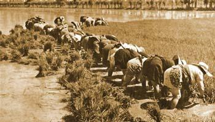

Profilo Storico
Nata da una famiglia di agricoltori, che per un secolo hanno tramandato la loro esperienza di coltivatori, L'Azienda Agricola Lodigiana è divenuta anche trasformatrice e distributrice dei suoi prodotti, mantenendo gli antichi e rigidi criteri di lavorazione.
Abbiamo fatto della qualità il nostro obbiettivo, miscelando la tradizione e la tecnologia, creando un equilibrio in cui l'opera preziosa ed insostituibile dell'uomo è supportata dall'uso di macchinari tecnologicamente avanzati e tesa al rispetto dell’ambiente.
Dalla nostra grande passione per la qualità, la nostra Azienda, oltre ad avere una vasta gamma di varietà tipiche di riso, propone anche una linea di risotti pronti in diversi gusti, farine, grissini, biscotti e miele.
La filosofia della qualita
L’Azienda Agricola Lodigiana si propone di rispondere ad un insieme sempre più complesso di bisogni e aspettative del cliente.
Sono analizzati e curati tutti i processi produttivi, iniziando dall’acquisto del seme alla coltivazione, dalla trasformazione al confezionamento fino al Consumantore finale.